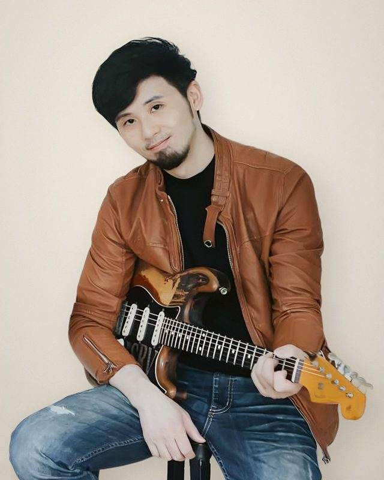
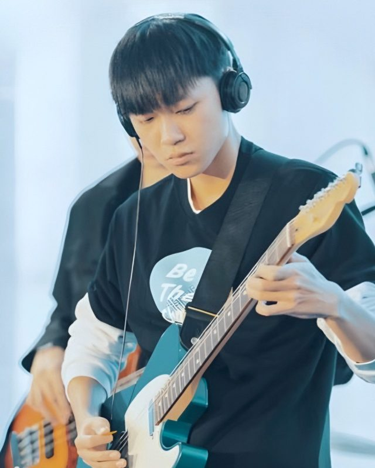
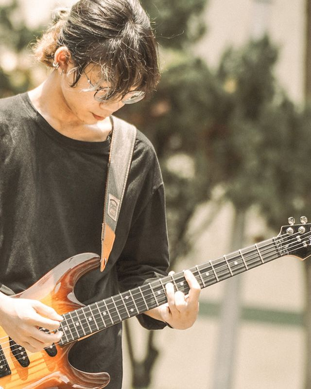
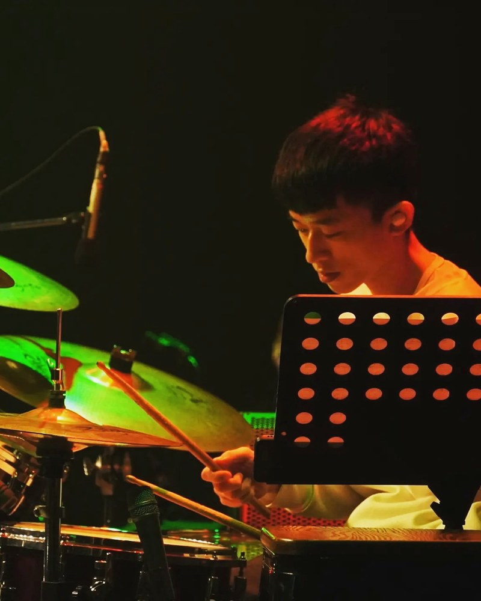

師資介紹｜慕尼克音樂新北板橋校區
慕尼克音樂板橋校區由小江老師、小佑老師、安安老師、通哥老師與劭奇老師五位師資共同駐點。我們的老師不只是教學經驗豐富的專職音樂人，更是活躍於各大音樂祭、演唱會與錄音室的創作者與樂手。從孩子的第一堂啟蒙課，到站上全國大賽舞台、通過國際檢定，都有老師一路陪著練習、一起成長。

小江老師｜江孟翰 Stevie Chiang
慕尼克音樂負責人・爵士鼓／吉他／樂團／詞曲創作
小江老師是慕尼克音樂負責人，專長涵蓋爵士鼓、吉他、樂團合奏編排與詞曲創作。除了在板橋校區親自帶課，也負責統籌各科樂器的教學系統與進度規劃。
他曾任崇右影藝科技大學演藝系助理教授、莊敬高職表演藝術科兼任教師，以及桃園武陵高中、內壢高中、振聲中學高中部吉他社指導老師，長年陪伴青少年組團、玩音樂，累積了深厚的第一線教學經驗。
在音樂創作上，小江老師曾獲多項全國大獎肯定：包括 2007 桃園歌謠節「青春鬥陣行」全國樂團創作競賽冠軍、2003 第一屆桃園歌謠節全國詞曲創作大賽亞軍、2017 台北市勞工重建處職業災害微電影詞曲創作賽暨演唱第一名〈肩膀〉、2018 舊愛新歡古典詩詞譜曲創作暨演唱競賽評審團特別獎〈煙鎖秦樓〉，並於 2018、2020、2022 年三度榮獲古詞新律組進士獎；亦曾入選「南面而歌」與「臺南 Sing 時代之歌」。大愛電視台《愛的路上我和你》主題曲〈鳥仔〉，詞曲亦出自他手。
在台語流行與跨界創作領域，作品〈阿春嬤〉（詞曲演唱：小江老師）以 Deep House 電音曲風，細膩描寫長輩與孩子因科技與資訊落差產生的疏離感，入選高雄市政府文化局「南面而歌」並收錄於《2017-2018南面而歌【南風起】新世代台語歌原創歌曲作品輯》。他與太太 Candy 組成「糖果先生」發行的台語單曲〈癮頭〉，由小江老師編曲、拍謝少年吉他手維尼製作，取材自親友遭遇詐騙卻仍深信對方需要幫助的真實故事，同樣入選《’19南面而歌 新世代台語歌創作選輯》。兩人亦共同創作、以 Candy 名義參加「臺南 Sing 時代之歌原創音樂競賽」，於 2017 年發表〈玉井的風景〉、2018 年發表〈予家己的批，1998〉，連續兩屆獲獎。
教學實績方面，小江老師指導的學生已累積奪下超過 30 座全國音樂比賽冠軍，並有 9 位學員通過英國 Rockschool 國際爵士鼓檢定最高等級 Grade 8。在 2025 年亞洲盃爵士鼓台北場中，學員江定謙一舉拿下幼兒組與幼兒演奏組雙料冠軍，蔡顓謙則奪下高中組冠軍（點此看 2017–2026 完整比賽與檢定名單）。平時他也與太太 Candy 共同經營音樂親子頻道「糖果先生 Candy & Husband」，擔任吉他手兼音樂製作人。

小佑老師｜陳諺群
專任指導・爵士鼓／吉他／歌唱／Bass／流行鍵盤
小佑老師自 2021 年起即為教學團隊核心師資，現於板橋慕尼克擔任專任老師，教授爵士鼓、木吉他、電吉他、歌唱、Bass 與流行鍵盤，個人班與團體班、兒童與成人皆有開課。他的課堂直接從「學生想彈的那首歌」出發，將視譜、聽力訓練、基本功與即興演奏自然融進歌曲裡，並依每位學員的步調靈活調整進度。他熟悉流行、Funk、藍調、搖滾與爵士等多元曲風，擅長使用 Cubase、Guitar Pro 進行編曲與錄音，同時具備專業現場音響調校能力。
面對比賽、Rockschool 國際檢定與模擬考，小佑老師除了紮實訓練技巧，更懂得照顧孩子上台前的緊張心情；在安排成果發表、街頭演出等公開表演時，他總是細心觀察孩子的準備度與個人意願，讓每一次登台都成為正向的累積。
在競賽指導上，2022–2023 年間，他指導的學員於亞洲盃國際音樂大賽奪下爵士鼓幼童組第一名、樂人獎國際音樂大賽奪下爵士鼓兒童 A 組第一名，並在 Drum Off Taiwan、卓越盃、樂人獎吉他組等賽事累積近 30 項名次與特優。2025 年更是捷報頻傳：指導學員「蛋蛋 許亘樂」以〈Jibun ROCK〉奪下扶輪公益盃城市創意少兒爵士鼓大賽 B 組（國小三、四年級）第 1 名、於 TMA 爵士鼓大賽以〈Deeper Deeper〉拿下三年級跨組四年級組冠軍、亞洲盃國際音樂大賽拿下爵士鼓兒童 D1 組第一名、新竹區域賽（8/23）以〈進擊的巨人組曲〉奪冠，並於 2025 年 12 月 ASAF 亞洲學生台灣藝術節台灣初賽榮獲金獎〈Deeper Deeper〉；同年指導學員呂洛良亦於亞洲盃拿下兒童 D2 組第二名（看比賽成績）。
每逢學員比賽或演出，小佑老師常親自操刀多軌錄音與影片剪輯，為孩子留下一支音質與畫面兼具的成長紀錄；在創作營隊中，他也帶領學生學習基礎作曲並協助原創錄音。每堂課後，他都會整理清楚的練習重點，讓家長與孩子回家練習時更有方向。
安安老師｜張妤安
兒童爵士鼓專任・職業樂團鼓手／詞曲創作／音樂製作
安安老師是慕尼克的兒童爵士鼓專任老師，同時也是活躍於台灣獨立音樂圈的職業鼓手，累積 15 年深厚鼓齡。她曾任知名獨立樂團「猛虎巧克力」、「鯨魚號」鼓手，並跨足音樂製作與詞曲創作。她的演出足跡遍及海內外超過百場巡迴，曾登上大港開唱、火球祭、簡單生活節等大型音樂祭舞台，參與過音樂實境節目《一起聽團吧》，並曾與鄭宜農、高小糕、四枝筆等音樂人合作演出。
身為鼓手的安安老師，在詞曲創作與製作上更展現出細膩的人文溫度。2025 年 11 月鯨魚號於 StreetVoice 發行的作品中，英文單曲〈Tinker〉、〈Chaser〉、〈Sophia〉與中文歌〈Itsuka〉皆由她親自填詞，其中〈Tinker〉與〈Itsuka〉更是一手包辦詞曲；同時她亦擔任〈Tinker〉、〈Sophia〉的單曲製作人，並與黃維凡共同製作〈Chaser〉。
在板橋慕尼克，安安老師專注於兒童爵士鼓教學，指導學員屢獲全國大獎：包括扶輪公益盃高年級組冠軍、TMA 全國音樂大賽一年級冠軍、亞洲盃幼童組冠軍，以及 Drum Off Taiwan 全國爵士鼓大賽 C 組季軍。2025 年亞洲盃爵士鼓大賽中，她指導的蘇子桓奪下台北場幼兒獨奏組冠軍，柯閎堉則拿下新竹場幼兒演奏組亞軍（看比賽成績）。
安安老師相信「好的節奏是從身體長出來的」，講究讓孩子把每一個鼓點打得清楚、乾淨又好聽。她會依照每個孩子的程度量身改寫鼓譜；每當孩子站上比賽舞台，她總是溫暖地守在台邊，幫孩子把上台前的心情穩住，安心發揮實力。

通哥老師
助理老師・電吉他／木吉他／貝斯／爵士鼓
通哥老師現任慕尼克助理老師，專長樂器涵蓋電吉他、木吉他、貝斯與爵士鼓。他過去曾參與管樂團打擊分部，並擔任高中熱音社指導老師，目前亦持續進修音樂治療領域。在曲風上，他擅長搖滾與重金屬風格，具備金屬吼腔演唱技巧，並熟悉 Logic Pro 編曲錄音軟體。教學時，通哥老師重視讓學生先用身體感受音樂律動，再一步步理解節奏、樂理與演奏技巧；課堂上鼓勵學生主動思考與探索，引導他們將自己的情緒與想法自然融入演奏之中。

劭奇老師｜陳劭奇
專任指導・爵士鼓
劭奇老師為慕尼克專任爵士鼓老師，教學對象涵蓋學齡前幼兒、國小學童至國高中青少年。他在學生時期即擔任高中與大學熱音社主力鼓手、社長與教學幹部，並曾參與管樂團打擊分部，同時也是自組樂團鼓手，累積了紮實的公開演出、音樂比賽與檢定實戰資歷。投入爵士鼓教學近三年來，持續帶領各年齡層學員準備音樂比賽、檢定考試與樂團合奏成果發表。
在課堂上，劭奇老師堅持「先理解、再熟練」的引導原則。當孩子遇到打點卡關或手腳協調問題時，他不會讓學生只是機械式地重複苦練，而是先幫孩子找出動作與拍子卡住的真正根源，再依每個人的性格與吸收步調因材施教。從個人基本功的建立，一路到與團員合奏練團、挑戰比賽與站上成果發表舞台，他都能一步步帶著孩子穩定發揮。
想問老師的課程時段，歡迎加入官方 LINE。
加入官方 LINE（@595zatgi）